All captions on photographs are either the original captions from the U.S. Signal Corps found on the back of the photo, or provided by the University of Nebraska - Lincoln's Archives & Special Collections.
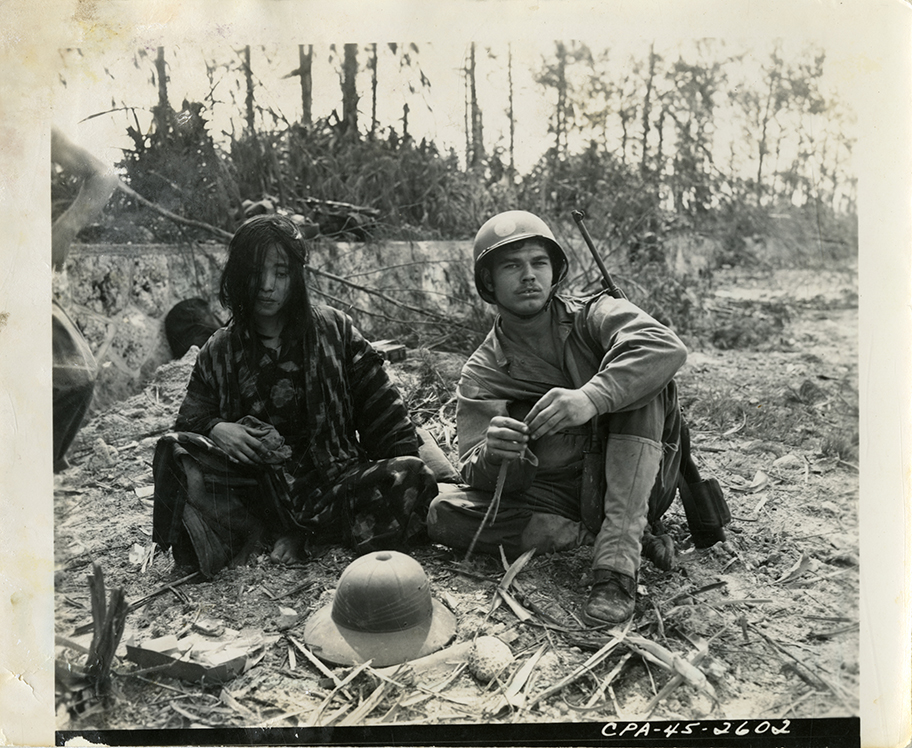Okinawa, Ryukyus. A Japanese girl [woman] is held by a member of the 7th Inf. Division. Photo by Ditzian, 1st Info. & His.
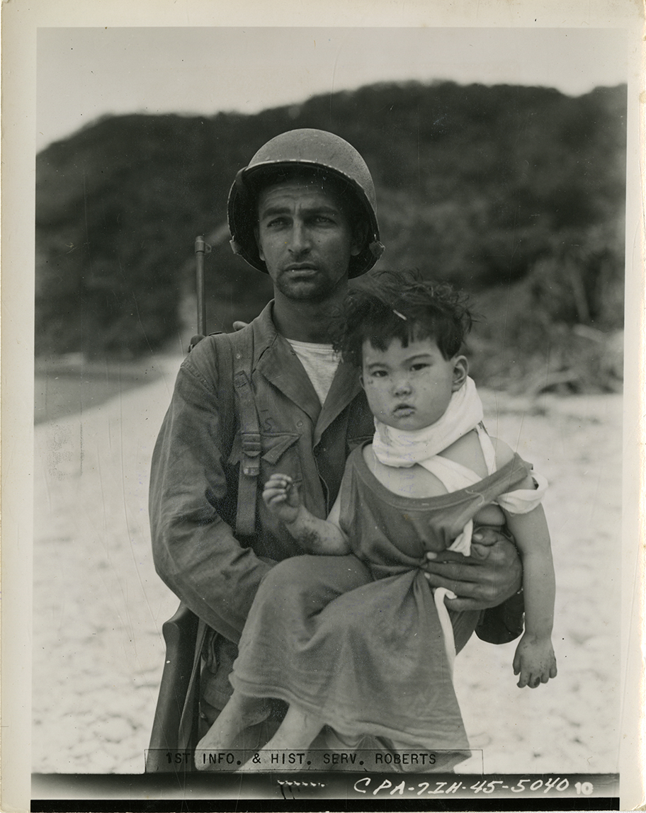Tokashiki Shima, Kerama Rhetto, Ryukyus. Okinawan child in the arms of 1st Sgt. John S. Evans of Springfield, S.C., was rescued by troops of the 77th Infantry Division. The Division frustrated an attempted mass suicide of civilians during the early stages of the battle. U.S. Army Photo by Roberts, 1st Information & Historical Service.
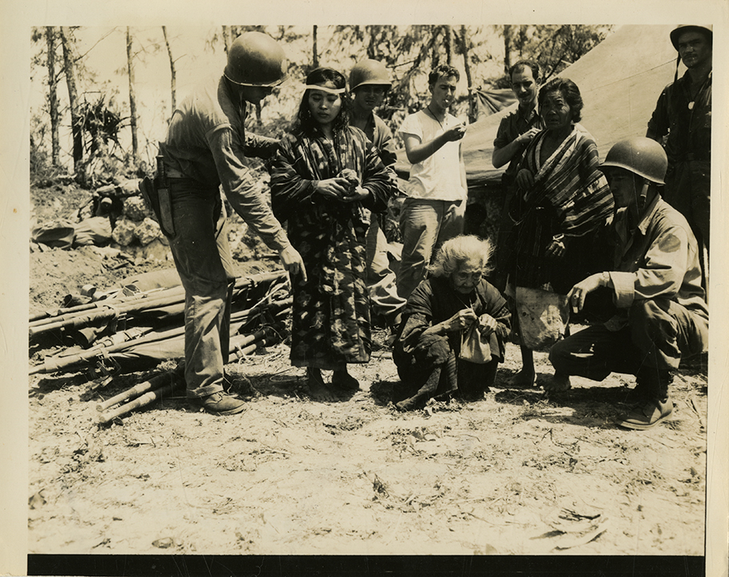Okinawa, Ryukyus. An Okinawa old woman, hurt while running, is given first aid by men of the 6th Inf. Div. On right is PFC. J.P. Conley of Saliersville, KY., who is trying to make the Natives understand that the camera won't hurt them. Photo by Gurtcheff-3117 Sig. Serv. BN.
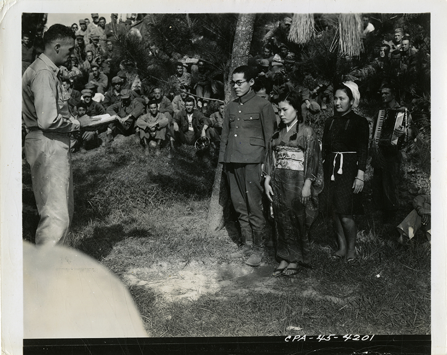Okinawa. XXIV Corps Headquarters. An American civil wedding ceremony is conducted by an army chaplain for Japanese prisoners found in a dave just behind the front lines. The Jap bridegroom was a 1st Lt with a machine gun company, and the Okinawan bride a volunteer nurse with the Jap forces. The bridesmaid (to the rear of the bride) is an English speaking Hawaiian. A GI plays the wedding music as others look on. (Signal Corps Photo). Photographer Unknown
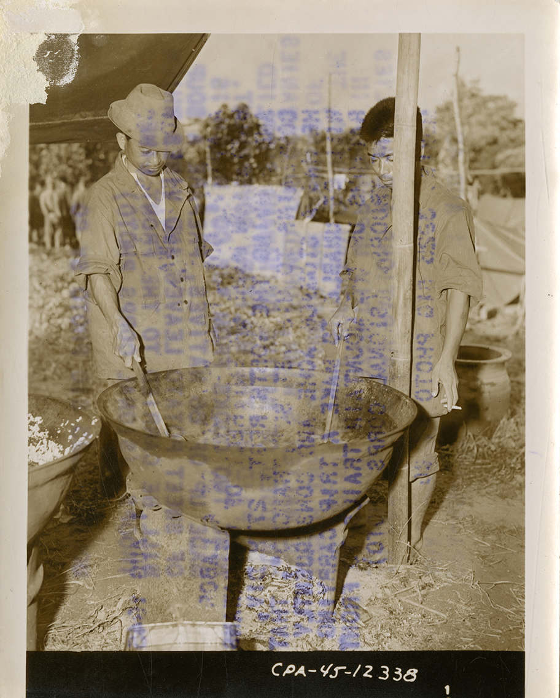Ada, Okinawa. In order to carry rations and supplies to men of the 27th Div mopping-up in the mountains of northern Okinawa, the 105th Inf Regt, under the command of Col Walter S Winn, formed two companies composed of Native Okinawans supplied and paid by the military government. Here two cooks from "J" Co, which is made up of 66 Natives, prepare a soup of sweet potato leaves and vines which will be carried to the front line troops. (Signal Corps Photo). Mokis, 3925 Sig Photo SV CO
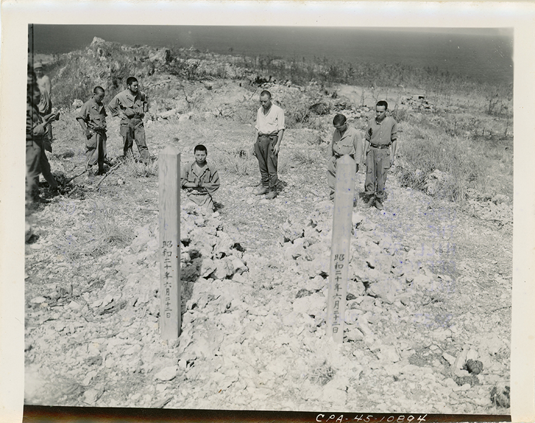Okinawa. Jap prisoners of war stand in front of the graves of General Isama Cho, Chief of Staff, and Lt Gen Mitsuro Ushijima, former commanding General of the 32d Imperial Japanese Army, on Hill 98. Picture made at request of the Office of Psychological Warfare. (Signal Corps Photo). 3233D Sig Photo Det, Photog Unknown
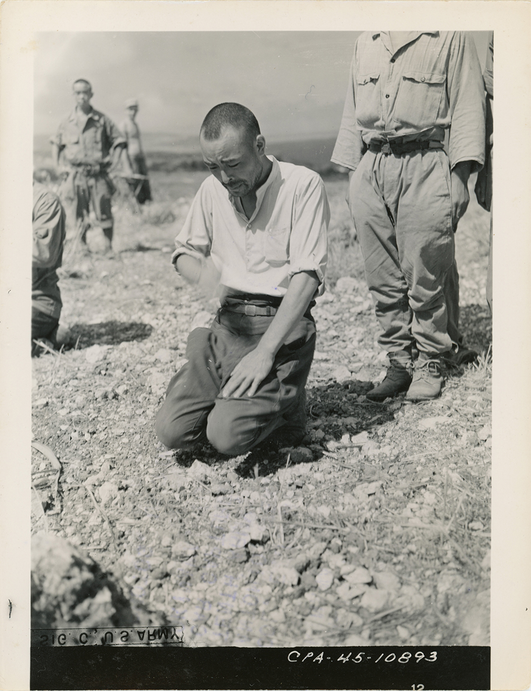Okinawa. A Jap prisoner of war kneels in front of the graves of general Isama Cho, chief of staff, and Lt Gen Mitsuro Ushijima, former commanding general of the 32nd Imperial Japanese Army, on Hill 98. Picture made at request of the Office of Psychological Warfare. (Signal Corps Photo) 3233 Sig Photo Det - Photog Unknown
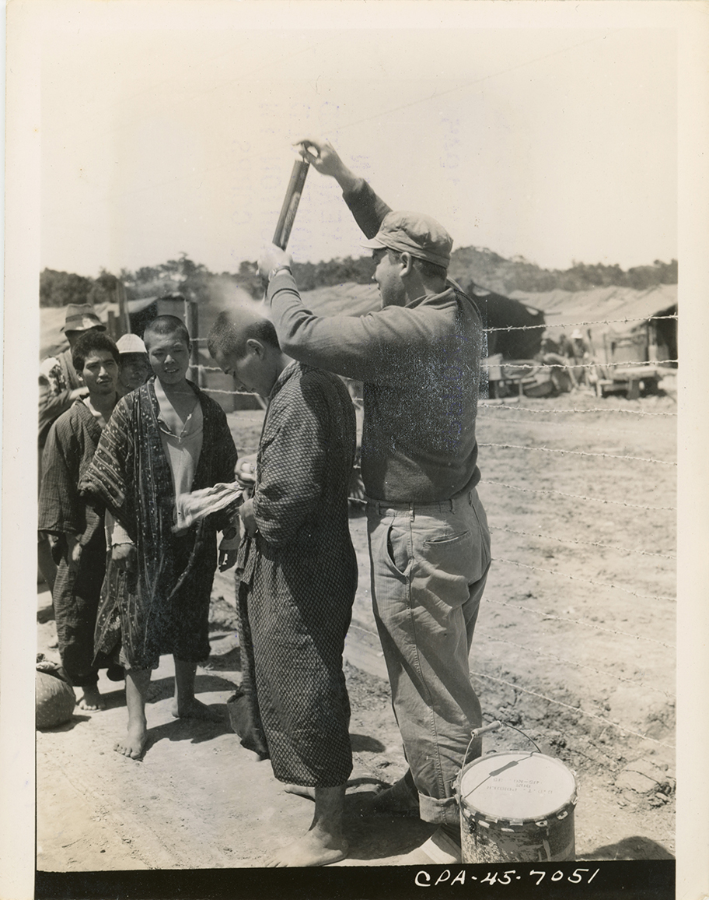Okinawa. Male civilians are well saturated with DDT, lice powder, by PFC. M. C. Manley of Chicago, ILL., after their belongings and person have been carefully searched the civilians surrendered to the 105th Regt, 27th Inf. Div. and were brought to Tiara for interrogation. (Signal Corps Photo). Belgin, 3240 Sig. Photo Det.
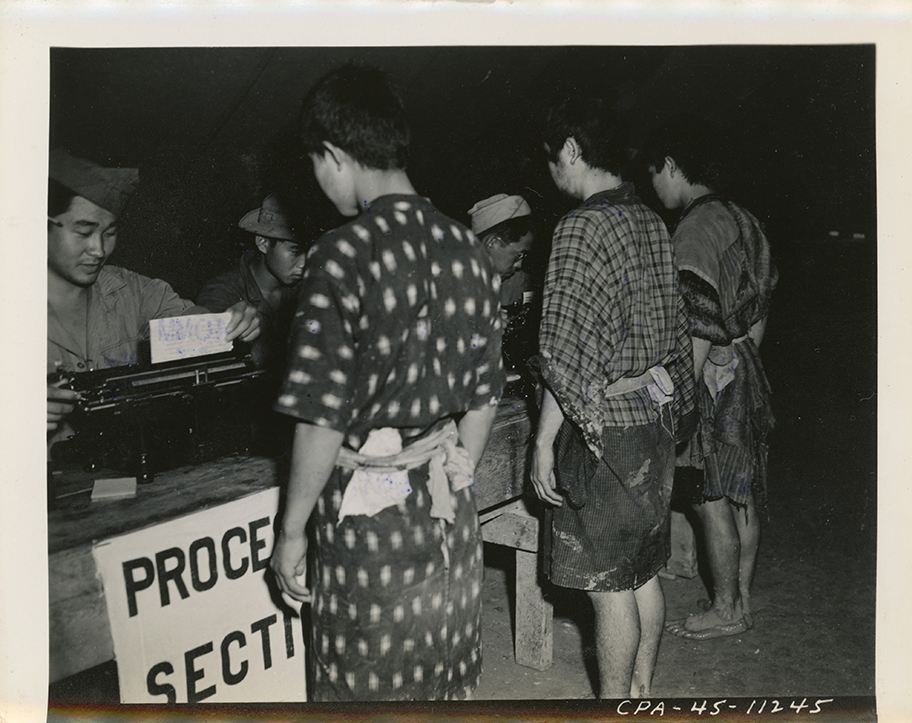Okinawa. PW's are questioned during processing. (Signal Corps Photo). Pierce, 3234 Sig Photo Det
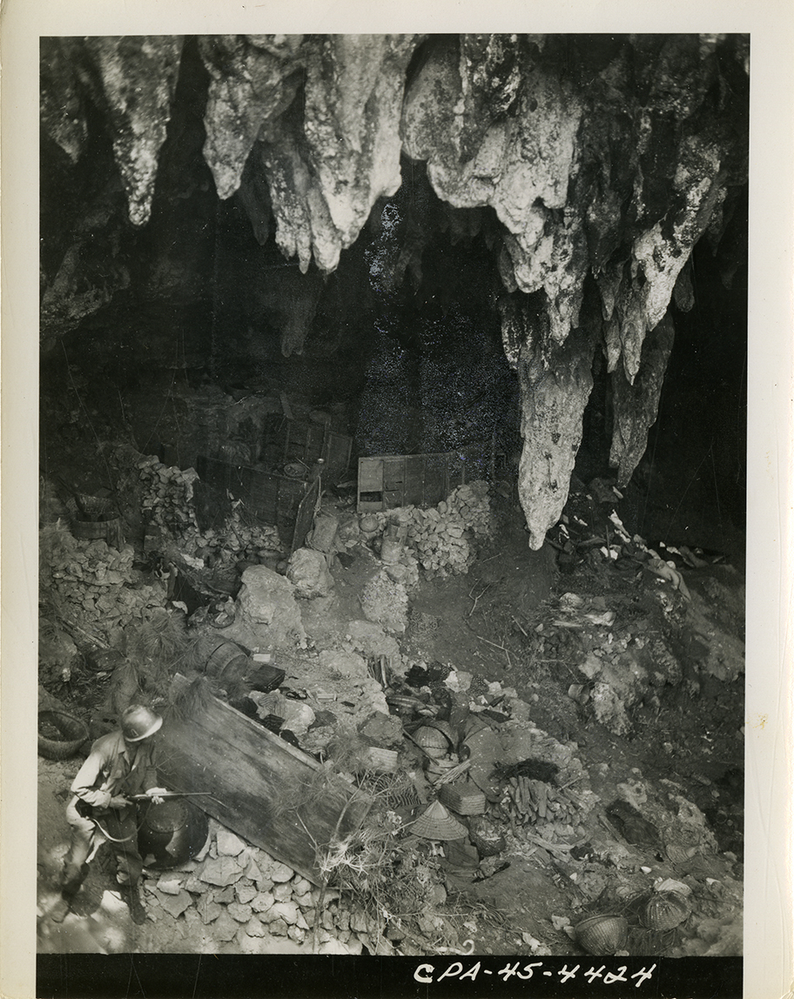Okinawa. Retreating enemy troops on Okinawa left much equipment in caves which were hurriedly vacated. This soldier, advancing on a cave but recently occupied by Japs, surveys such a scene. (Signal Corps Photo). Adams, 3234 Sig Photo Det
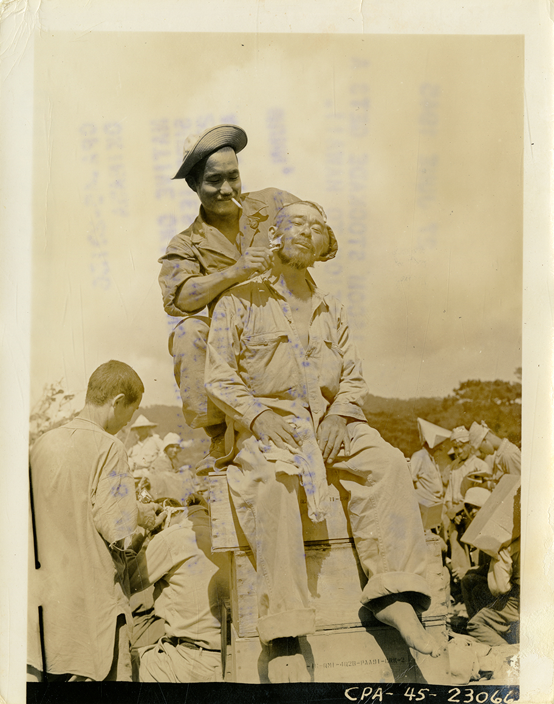Prisoner of war in Iscom Stockade gets a hari cut before evacuation to Hawaii. (Signal Corps Photo). Cochran, 3234 Sig Photo Det